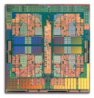
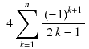

Atualmente para tirar um melhor proveito dos processadores com múltiplos núcleos, é necessário que os desenvolvedores se preocupem com a execução de tarefas em paralelo. Para facilitar nisso, foi adicionado o pacote chamado java.util.concurrent no Java 5. Neste post vou apresentar através de alguns exemplos algumas facilidades que as classes deste pacote provêem.

Exemplo 1: Execução assíncrona
Download do Exemplo
Este primeiro exemplo, baseado neste exercício, consiste no cálculo do valor do PI otimizado para rodar em vários núcleos separando-o em várias tarefas. Este valor pode ser calculado aproximadamente pela série de Gregory utilizando a seguinte fórmula:

Ou seja, teremos o seguinte nas primeiras iterações: PI/4 = 1 – 1/3 + 1/5 – 1/7 + …
Quanto mais iterações, mais preciso o valor fica. Veja esse link: http://www.eveandersson.com/pi/gregory-leibniz
O código abaixo realiza o cálculo do somatório recebendo o valor inicial (k) e o final (n). Veja que nossa classe implementa a interface Callable através do método call(), o qual retorna o tipo Double como resultado do somatório.
01 | import java.util.concurrent.Callable; |
03 | public class CalculoPI implements Callable<Double> { |
08 | public CalculoPI(int inicio, int fim) { |
13 | public Double call() throws Exception { |
16 | for (int i=inicio; i <= fim; i++) { |
17 | valor += Math.pow(-1.0, i + 1) / (2.0 * (double)i - 1.0); |
Para separarmos este cálculo em várias tarefas concorrentes podemos definir os valores iniciais e finais de cada uma delas. Veja o código a seguir:
01 | import java.util.concurrent.ExecutionException; |
02 | import java.util.concurrent.ExecutorService; |
03 | import java.util.concurrent.Executors; |
04 | import java.util.concurrent.Future; |
08 | public static void main(String[] args) throws InterruptedException, ExecutionException { |
10 | ExecutorService es = Executors.newCachedThreadPool(); |
13 | Future<Double> parte1 = es.submit(new CalculoPI(1,100000000)); |
14 | Future<Double> parte2 = es.submit(new CalculoPI(100000001,200000000)); |
15 | Future<Double> parte3 = es.submit(new CalculoPI(200000001,300000000)); |
16 | Future<Double> parte4 = es.submit(new CalculoPI(300000001,400000000)); |
19 | double pi = 4.0 * (parte1.get() + parte2.get() + parte3.get() + parte4.get()); |
23 | System.out.println("Valor calculado de PI é " + pi); |
Aqui foram utilizadas 500.000.000 iterações, as quais são dividas em 4 partes. Inicialmente, foi criado um pool de threads através de Executors.newCachedThreadPool() que retorna um objeto ThreadPoolExcutor configurado para criar novas threads assim que necessário e reaproveitar as já existentes que estejam disponíveis. Você pode também utilizar métodos como Executors.newFixedThreadPool(int) para criar um pool com número fixo de threads ou criar um objeto do tipo ThreadPoolExcutor explicitamente definindo seus parâmetros no construtor. Em seguida, as partes dos cálculos foram submetidas para execução de forma assíncrona, ou seja, ao chamar submit() não vamos aguardar o cálculo finalizar porque ele será executado em paralelo.
Quando um serviço é submetido, é retornado um objeto Future. É através dele que pegamos o resultado do cálculo na linha 19 chamando seu método get(). Este método é bloqueante, ou seja, ao chamá-lo é necessário aguardar o final da execução da tarefa.
Exemplo 2: Produtor/Consumidor com BlockingQueue
Download do Exemplo
Implementar esse algoritmo usando apenas blocos de código com synchronized e os métodos wait() e notify()/notifyAll() muitas vezes é trabalhoso. Para facilitar isso, podemos utilizar a collection BlockingQueue. Veja abaixo como fica simples o código:
01 | import java.util.concurrent.BlockingQueue; |
02 | import java.util.concurrent.LinkedBlockingQueue; |
06 | public static void main(String[] args) { |
08 | BlockingQueue<Integer> queue = new LinkedBlockingQueue<Integer>(10); |
11 | new Thread(new Produtor(queue)).start(); |
14 | new Thread(new Consumidor(queue)).start(); |
01 | import java.util.concurrent.BlockingQueue; |
03 | public class Produtor implements Runnable { |
05 | private BlockingQueue<Integer> queue; |
07 | public Produtor(BlockingQueue<Integer> queue) { |
22 | } catch (InterruptedException e) { |
01 | import java.util.concurrent.BlockingQueue; |
03 | public class Consumidor implements Runnable { |
05 | private BlockingQueue<Integer> queue; |
07 | public Consumidor(BlockingQueue<Integer> queue) { |
16 | int valor = queue.take(); |
18 | System.out.println(valor); |
20 | } catch (InterruptedException e) { |
Conforme pode ser visto nos comentários no código, o método put() adiciona valor na fila imediatamente se houver espaço, caso contrario aguarda até que o espaço fique disponível. No consumidor, o método take() é chamado e, se houver algum valor disponível ele é retirado, senão fica bloqueado até que um valor seja adicionado.
Na próxima parte deste artigo irei apresentar algumas outras ferramentas deste pacote, como o uso de locks e semáforos.
Rate This


.gif)
{kind=link}
Olá Victor, beleza ?
Cara parabens pelo artigo. Essa API do java é umas das mais fantásticas e poucas pessoas sabem usar, inclusive eu. Espero ver mais artigos sobre ela.
Abraços
Olá Mauricio. Tudo certo e com você?
Obrigado! Também acho muito interessante essa API e só foi a pouco tempo atrás que aprendi a usá-la. Pode deixar que vou escrever mais algumas coisas sobre ela sim
Abraços!
Victor ,
Muito bom o seu artigo.
Após ler , resolvi tirar a prova dos 9.
Acrescentei ao seu código o cálculo usando a programação tradicional e fiz a comparação .
O código usando a concorrência roda o equivalente a 57% do tempo do sem concorrência. É claro que depende do hardware .O meu notebook é um Intel Core2 T5500 e já tive um ganho considerável.
Drausio
import java.util.concurrent.ExecutionException;
import java.util.concurrent.ExecutorService;
import java.util.concurrent.Executors;
import java.util.concurrent.Future;
public class Main {
public static void main(String[] args) throws InterruptedException, ExecutionException,Exception {
//cria um pool de threads para realizar o cálculo
long ti = System.currentTimeMillis();
ExecutorService es = Executors.newCachedThreadPool();
//separa o cálculo em 4 partes definindo o valor de n inicial e final para cada uma
Future parte1 = es.submit(new CalculoPI(1,100000000));
Future parte2 = es.submit(new CalculoPI(100000001,200000000));
Future parte3 = es.submit(new CalculoPI(200000001,300000000));
Future parte4 = es.submit(new CalculoPI(400000001,500000000));
//junta os valores cálculados das 4 partes e multiplica por 4
double pi = 4.0 * (parte1.get() + parte2.get() + parte3.get() + parte4.get());
System.out.println(“Valor calculado de PI é ” + pi);
long tf = System.currentTimeMillis();
long tcc = tf-ti;
System.out.println(“Tempo gasto com concorrência ” + tcc);
ti = System.currentTimeMillis();
//separa o cálculo em 4 partes definindo o valor de n inicial e final para cada uma
Double parteA = (new CalculoPI(1,100000000)).call();
Double parteB = (new CalculoPI(100000001,200000000)).call();
Double parteC = (new CalculoPI(200000001,300000000)).call();
Double parteD = (new CalculoPI(400000001,500000000)).call();
//junta os valores cálculados das 4 partes e multiplica por 4
pi = 4.0 * (parteA + parteB + parteC + parteD);
System.out.println(“Valor calculado de PI é ” + pi);
tf = System.currentTimeMillis();
long tsc = tf-ti;
double divisao =(double)tcc / (double)tsc;
double ganho = (divisao) * 100 ;
System.out.println(“Tempo gasto sem concorrência ” + tsc);
System.out.println(“ganho % – TCC/TSC * 100 = ” + ganho + ” %”);
}
}
Victor,
Tem mais um detalhe.
Usando uma ferramenta de profile, percebi que o custo de se ter o código mais rápido é o aumento do uso da memória . O aumento da memória utlizada foi de 40% ( não é da memória como um todo , mas apenas das classes envolvidas ) . Na verdade temos uma relação de custo benefício. Se a parte do código que desejo alterar utlizando o paralelismo, inicialmente usa pouca memória acho que vale a pena mexer. Ou seja, em termos de uso de memória o impacto será baixo, mas a percepção de melhora por parte do usuário pode ser grande. Parece , também, ser interessante o uso da concurrent em aplicações batch.
Antigamente não tinhamos opção, agora podemos decidir entre melhorar o tempo de resposta ou economizar recursos.
Drausio
Pessoal, agora que eu vi que tinha esquecido de colocar a última versão do código do cálculo do PI na hora de postar esse artigo.
Estava com um bugzinho, mas agora tá corrigido
Coloquei também um link em cada exemplo pra quem quiser baixá-los.
Drausio,
Valeu por enviar os resultados de seus testes! Realmente é interessante ver como dá diferença no tempo de execução. Apesar de usar mais memória, como você testou aí, em muitos casos isso compensa.
Rodei rapidinho um profile de CPU aqui pra ver a diferença e em meu caso com concorrência ficou 56,55% mais rápido. O processador é um AMD Athlon 64X2 rodando Linux. Imagino que em processadores Quad Core esse ganho de desempenho deva ser muito maior.
Victor
Olá Vitor, tudo bem ?
Ve se nos próximos artigos, utilize um exemplo mais concreto, sem ser calculos matemáticos. Se bem que a utilização desses calculos são muito bom para medir performace, porem perde-se um pouco o foco no artigo. De exemplos mais simples, explicando as classe da API, e o porque de sua utilização. Estarei esperando o próximo artigo.
Vamos nos falando, meu e-mail é:
nunes.mauricio@gmail.com.
Aguardo seu e-mail.
Abraços